Exploraciones / formatos para canales
Laboratorio
Formatos que armé por mi cuenta para mostrar oficios que el trabajo por encargo no siempre pide: mapas animados, archivo, motion musical, identidad y web. Son proyectos de muestra, sin cliente.
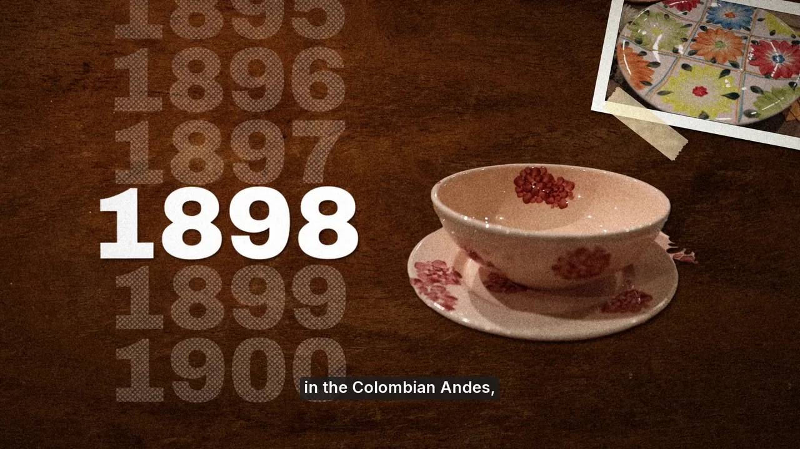
Pieza propia · P13
«The town that paints its plates» · la loza de El Carmen
Explicativo de historia de 53 s, en inglés, en horizontal y en vertical: escritorio de archivo en 3D, tarjetas con sello, ruleta de años y transiciones de TV, con mis tomas de 2022 de manos pintando loza. Cada cifra está verificada contra sus fuentes (Mincultura, Radio Nacional, El Colombiano). Archivo de dominio público y CC0; nada generado.
Música: «Latin Industries», Kevin MacLeod (incompetech.com), licencia CC BY 4.0.
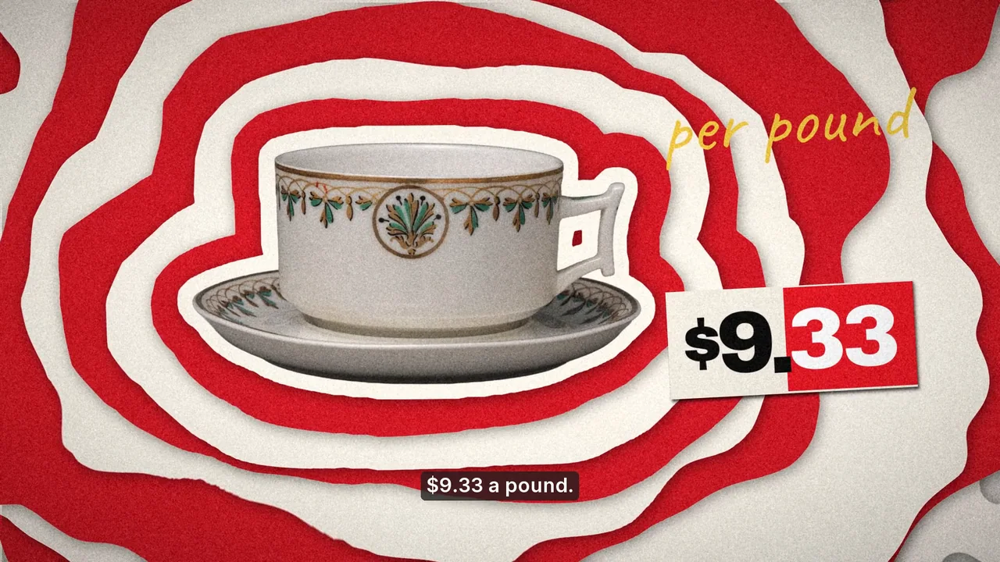
Pieza propia · P14
«The coffee chart» · finanzas con datos
Explicativo de finanzas de 47 s, en inglés, en horizontal y en vertical: por qué la libra de café en EE. UU. pasó de 4,17 a 9,33 dólares. Escritorio cenital, contadores y gráficos animados con series reales (BLS vía FRED y Banco Mundial); cada cifra se recalcula desde los datos. Archivo de dominio público y CC0; nada generado.
Música: «Hep Cats», Kevin MacLeod (incompetech.com), licencia CC BY 4.0.
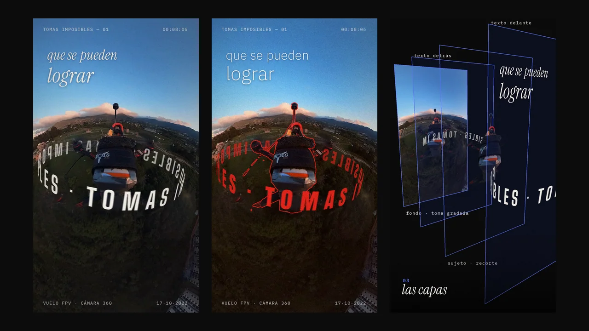
Pieza propia · P12
Tomas imposibles · texto detrás del sujeto
Motion editorial sobre mi vuelo FPV de 2022, con mi voz: las palabras caen con la voz y los anillos de letras orbitan en 3D y pasan detrás del dron. El mismo guion cambia de marca con un archivo de estilo. 13 s en vertical, con su desglose.
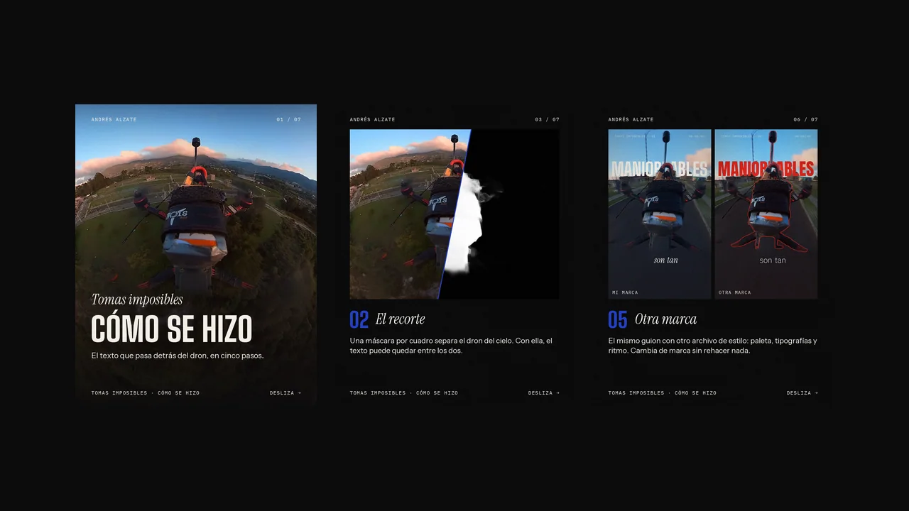
Pieza propia · C1
Carrusel · cómo se hizo «Tomas imposibles»
Siete láminas 4:5 para redes que explican el proceso: la toma, el recorte, las capas, la voz y el cambio de marca. Salen de mi motor de carruseles en PNG, PDF y video, en cualquier marca.
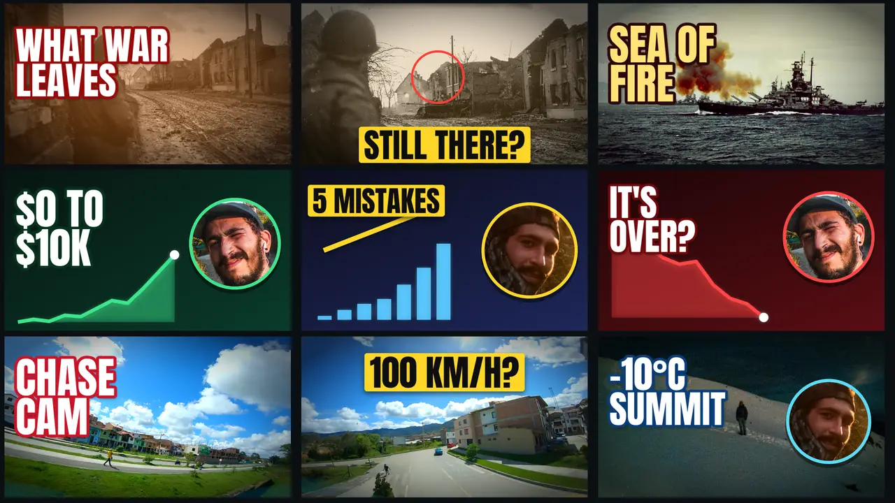
Proyecto de muestra · P6
Miniaturas en sets A/B
Doce miniaturas: documental, finanzas, aventura y tres de una serie para un show de entrevistas. Tres ideas distintas por video, cada una legible a 168 × 94 px, el tamaño de la celda en el celular. Fotos mías y archivo de dominio público; nada generado.
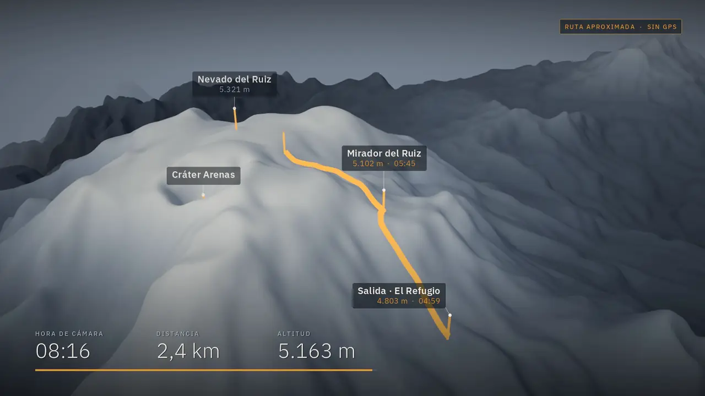
Proyecto de muestra · S1
Expedición al Nevado del Ruiz
Ruta animada sobre terreno 3D con mis tomas. 2:53 en horizontal y 45 s en vertical.
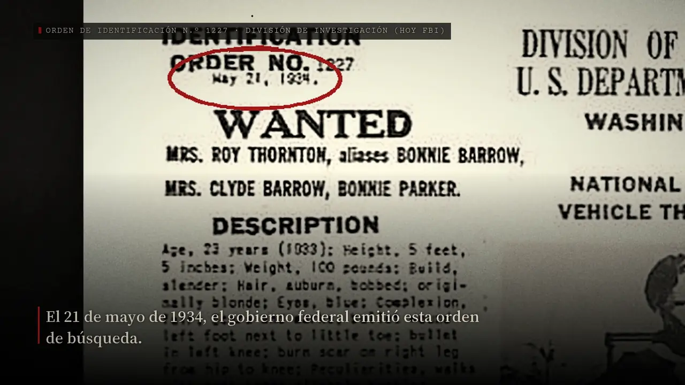
Proyecto de muestra · S2
Bonnie y Clyde: los últimos 127 días
Documental de archivo de dominio público. 4:01 en español y en inglés, y un short.
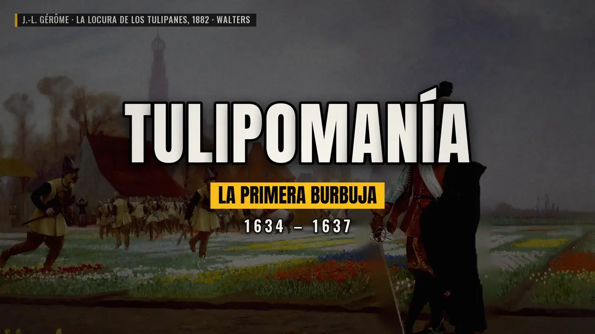
Proyecto de muestra · S3
Tulipomanía: la primera burbuja
Formato sin rostro para canales de historia económica. 60 s en vertical y 3:12.
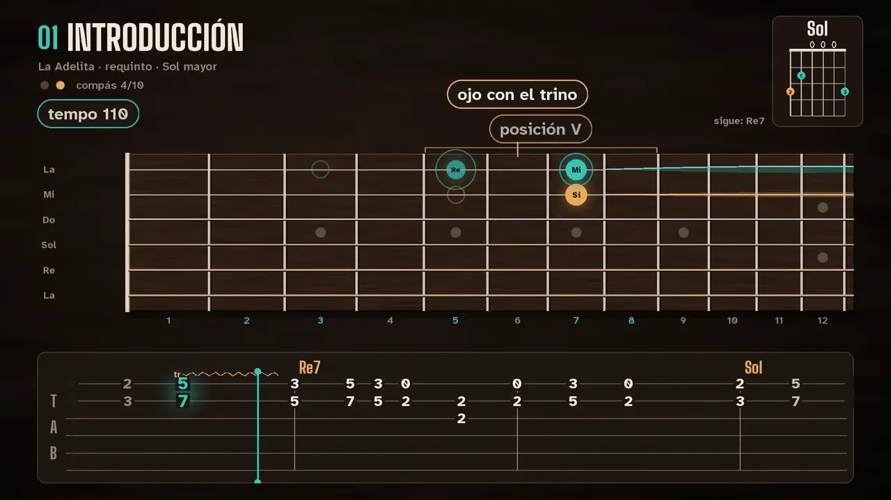
Proyecto de muestra · S7
La Adelita · motion musical
Diapasón y tablatura sincronizados con la música. 2:14 y 37 s.
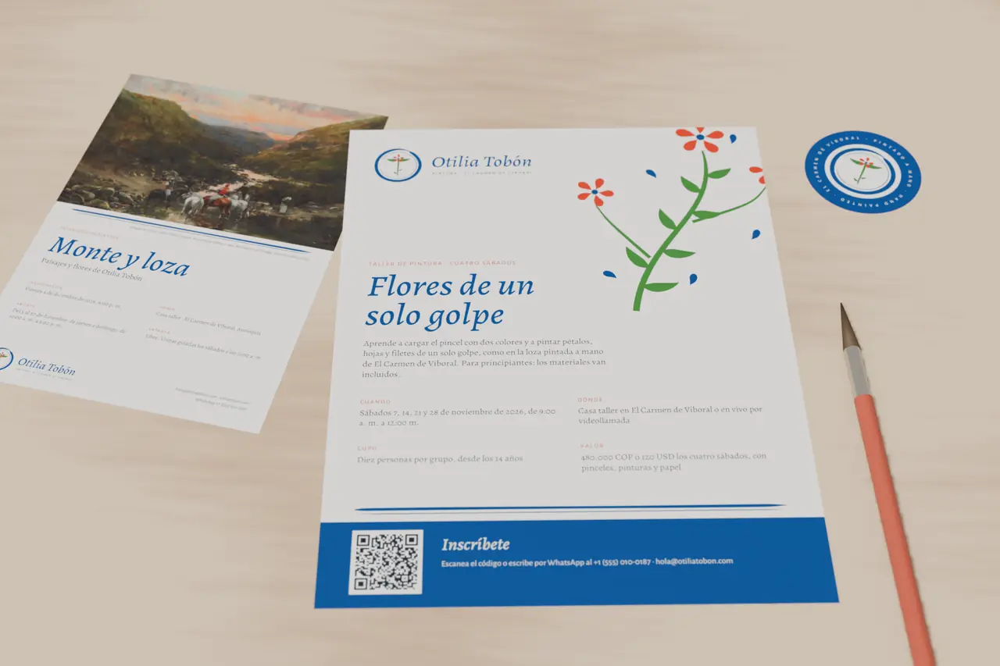
Proyecto de muestra · S10
Identidad para una pintora
Logo, piezas para imprenta, manual y mockups, para una artista ficticia.
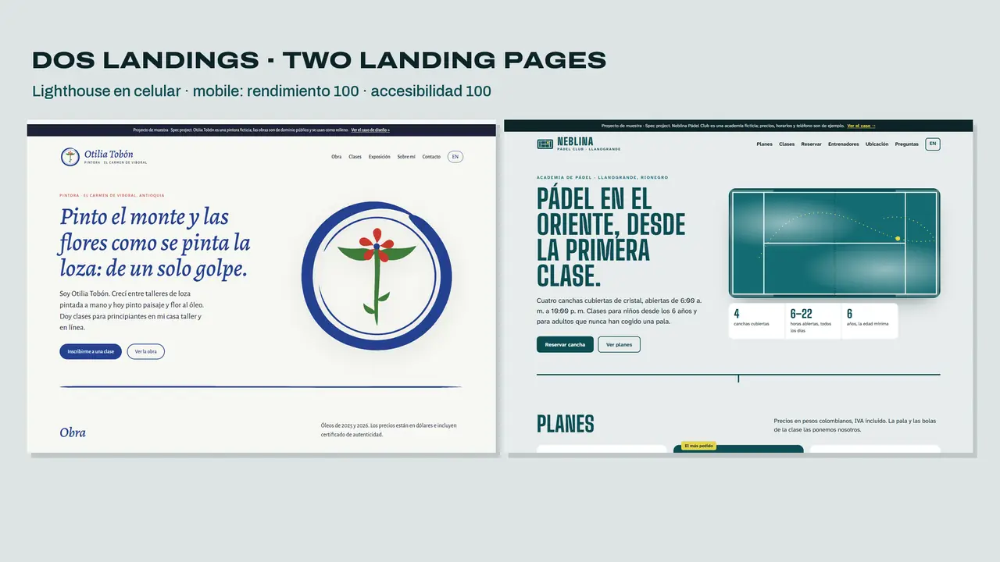
Proyecto de muestra · S19
Dos landings de muestra
Una pintora y «Neblina Pádel Club»: estáticas, bilingües y con reserva por WhatsApp.
¿Tienes material esperando?
Cuéntame qué necesitas, para cuándo y con qué material. Te respondo con un plazo y un precio fijo.
Escríbeme por WhatsApp Escríbeme un correo
Respondo en menos de 12 horas · Español nativo · inglés escrito